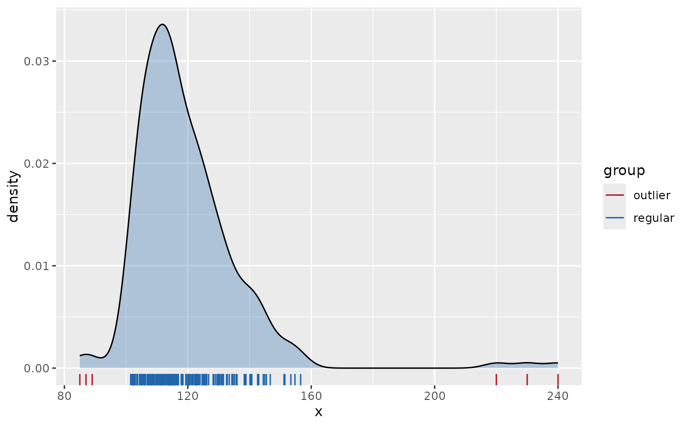

Directional Outlyingness for Skewed Distribution
Source:R/directional_outlyingness.R
directional_outlyingness.RdThis function computes the directional outlyingness of a numeric vector, as proposed by Rousseeuw et al. (2018), which is a measure of outlyingness of data point that takes the skewness of the underlying distribution into account.
Usage
directional_outlyingness(
x,
cutoff_quantile = 0.995,
rm_zeroes = FALSE,
max_ratio = NULL,
prec_scale = 1e-10,
cutoff.quantile = deprecated(),
rmZeroes = deprecated(),
maxRatio = deprecated(),
precScale = deprecated()
)Arguments
- x
A numeric vector
- cutoff_quantile
A numeric value in (0, 1): the proportion of the observations of a normal distribution that are not flagged. The cutoff of the scores is the
(1 + cutoff_quantile) / 2quantile of the standard normal distribution. Default is 0.995 (a cutoff of 2.81).- rm_zeroes
A logical value. If
TRUE, the zero distances (the observations equal to the median, withinprec_scale) are left out of the half samples before their scales are computed, which matters when many observations are tied at the median. Default isFALSE, as in the paper.- max_ratio
NULL(default), or a number of at least 2: each scale is then kept between the scale of all the distances to the median divided and multiplied bymax_ratio, so that a very short or very long half cannot give extreme scores. Not in the paper.- prec_scale
A non-negative number: an initial scale below it is taken as zero (default: 1e-10).
- cutoff.quantile, rmZeroes, maxRatio, precScale
![[Deprecated]](figures/lifecycle-deprecated.svg) Use
Use
cutoff_quantile,rm_zeroes,max_ratioandprec_scale.
Value
A tibble with columns:
data: The original numeric values.score: The calculated outlyingness score.flag: A logical vector indicating whether each value is a potential outlier or not.
Details
Directional outlyingness takes the potential skewness of the underlying distribution into account, by splitting the univariate dataset in two half samples around the median, each with \(h = \lfloor (n+1)/2 \rfloor\) observations (they share the median when \(n\) is odd), and scaling each half separately (Rousseeuw et al., 2018, Section 2.1). For the distances \(z_i\) of a half sample to the median, the scale is the one-step M-estimator $$s = s_0 \sqrt{\frac{1}{2 \alpha h} \sum_i \rho_c\left(\frac{z_i}{s_0}\right)},$$ from the initial scale \(s_0 = \mathrm{med}_i(z_i) / \Phi^{-1}(0.75)\), with Huber's \(\rho\)-function for scale, \(\rho_c(t) = \min\{(t/c)^2, 1\}\), \(c = 2.1\) (85% efficiency at the normal distribution), and \(\alpha = \int_0^\infty \rho_c(x) \, d\Phi(x)\), which makes the scale consistent at the normal distribution.
The score of an observation is its distance to the median divided by the
scale of its own half: on the short side of a skewed distribution, an
observation gets a higher score than one as far from the median on the
long side. For a normal distribution, both scales estimate the standard
deviation, and the score is close to the absolute robust z-score of
zscore().
An observation is flagged when its score exceeds the
\((1 + q) / 2\) quantile of the standard normal distribution, where
\(q\) is cutoff_quantile (2.81 for the default 0.995): about
\(1 - q\) of the observations of a normal distribution (0.5%) are
flagged.
References
Rousseeuw, P.J., Raymaekers, J., Hubert, M., (2018). A Measure of Directional Outlyingness With Applications to Image Data and Video. Journal of Computational and Graphical Statistics, 27(2):345–359.
Examples
# 200 right-skewed values (a gamma distribution shifted to start at 100),
# 3 low outliers below them and 3 high outliers
set.seed(1)
x <- c(100 + rgamma(200, shape = 2, scale = 10), 85, 87, 89, 220, 230, 240)
group <- rep(c("regular", "outlier"), c(200, 6))
ggplot2::ggplot(data.frame(x, group), ggplot2::aes(x)) +
ggplot2::geom_density(fill = "#2166ac", alpha = 0.3) +
ggplot2::geom_rug(ggplot2::aes(colour = group)) +
ggplot2::scale_colour_manual(values = c(outlier = "#b2182b", regular = "#2166ac"))

# the robust z-score scales both sides alike: regular values of the long
# right tail are flagged, but not the low outliers (the last three rows)
rob <- zscore(x, robust = TRUE)
subset(rob, flag)
#> # A tibble: 6 × 3
#> data score flag
#> <dbl> <dbl> <lgl>
#> 1 240 10.3 TRUE
#> 2 230 9.52 TRUE
#> 3 220 8.69 TRUE
#> 4 157. 3.42 TRUE
#> 5 155. 3.27 TRUE
#> 6 153. 3.16 TRUE
tail(rob, 3)
#> # A tibble: 3 × 3
#> data score flag
#> <dbl> <dbl> <lgl>
#> 1 89 -2.19 FALSE
#> 2 87 -2.35 FALSE
#> 3 85 -2.52 FALSE
# directional outlyingness scales each side separately: the low outliers
# score above the regular values of the long tail, and the 6 outliers are
# flagged
head(directional_outlyingness(x), 8)
#> # A tibble: 8 × 3
#> data score flag
#> <dbl> <dbl> <lgl>
#> 1 240 7.23 TRUE
#> 2 230 6.65 TRUE
#> 3 220 6.07 TRUE
#> 4 85 3.48 TRUE
#> 5 87 3.25 TRUE
#> 6 89 3.02 TRUE
#> 7 157. 2.39 FALSE
#> 8 155. 2.28 FALSE
data(forageLIBS)
# iron contents (mg/kg): a few samples are far above the others
fe <- forageLIBS$Fe[!is.na(forageLIBS$Fe)]
head(directional_outlyingness(fe))
#> # A tibble: 6 × 3
#> data score flag
#> <int> <dbl> <lgl>
#> 1 2060 13.3 TRUE
#> 2 1290 7.95 TRUE
#> 3 1210 7.40 TRUE
#> 4 1190 7.26 TRUE
#> 5 1080 6.50 TRUE
#> 6 1060 6.36 TRUE